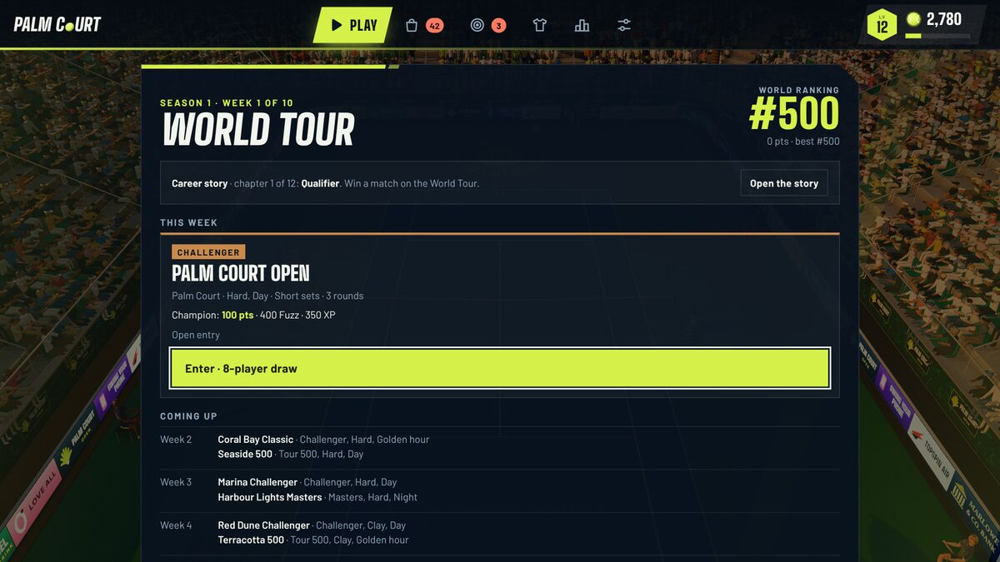

There is no real-money purchase in Palm Court and none of this can be bought: XP raises your level, and Fuzz is the currency you spend in the Store, and both are earned only by playing. Where a figure below comes from the game’s own balance simulation, it says so: that simulation uses invented players, because the game has no player data, so treat those lines as a guide rather than a promise. Everything else is read straight from the game’s rules.
The XP curve, level by level
Going from level 1 to level 2 takes 600 XP. Each step after that asks a little more than the one before, rising smoothly to 2,260 XP for level 49 to 50. There are no walls and no sudden jumps. Total XP needed to reach a level:
| Level | 2 | 5 | 10 | 15 | 20 | 25 | 30 | 40 | 50 |
|---|---|---|---|---|---|---|---|---|---|
| Total XP | 600 | 2,400 | 5,420 | 8,530 | 11,840 | 15,540 | 19,870 | 31,640 | 50,150 |
The designer’s target was about two matches for level 2 and about seven hours of play for level 30. Level 50 is the cap.
What a match pays
Every match builds its reward from the same pieces: 120 XP and 60 Fuzz for a win, or 65 XP and 35 Fuzz for a loss (so a loss pays about two thirds of a win), plus 3 XP and 1 Fuzz for each point won, 6 and 3 for each ace, 4 and 2 for each winner, 3 and 1 for each shot of a rally past the fifth, and 1 and 1 for each swing with clean timing. Each bonus has a cap (150 points, 40 aces, 80 winners, 20 rally shots, 40 clean swings), so a marathon cannot mint without limit.
Three multipliers then scale the base. Length: a tiebreak pays 0.35, a short set 1 and a full set 1.6. CPU level: Rookie 1, Club 1.25, Pro 1.6, and an online match 1.25. The first win of the day adds 200 XP and 150 Fuzz on top, after the multipliers. For a typical match in the game’s balance model, the totals look like this:
| CPU | Format | Win (XP / Fuzz) | Loss (XP / Fuzz) |
|---|---|---|---|
| Rookie | Short set | 229 / 100 | 149 / 66 |
| Club | Short set | 286 / 125 | 186 / 83 |
| Pro | Short set | 366 / 160 | 238 / 106 |
| Pro | Full set | 586 / 256 | 386 / 171 |
| Pro | Tiebreak | 107 / 48 | 67 / 30 |
Because a tiebreak is quick, a short set longer and a full set longest, the reward per minute comes out close to even across the three lengths. The multiplier is what makes a difference: against a Pro CPU a minute of play is worth about 60 percent more than against Rookie, and a loss against a harder CPU can pay more than a win against an easier one.
Where else Fuzz and XP come from
Matches are the biggest source, but not the only one. The sections of the other guides cover how each works; here are the sizes:
- Daily challenges: three a day, 150 to 400 XP and 100 to 250 Fuzz each, with one free reroll.
- Weekly goals: three a week, 300 to 600 XP and 200 to 380 Fuzz each (see the Daily Cup guide).
- Daily Cup: 80 XP and 50 Fuzz for finishing, 40 and 30 more for winning, and streak bonuses.
- Weekly Cup: Bronze, Silver and Gold once a week each, up to 620 XP and 400 Fuzz in all.
- Achievements: 36 in the browser game, worth 16,600 Fuzz and 8,525 XP once each.
- World Tour: the browser game plays the Challenger tier, which pays 50, 120, 220 and 400 Fuzz (and 60, 120, 200 and 350 XP) by the round you reach.
- Drills and arcade rounds: deliberately small, capped each day at 240 XP and 60 Fuzz for drills and 200 XP and 50 Fuzz for arcade rounds.

In the balance model, a casual player gets about 30 percent of their Fuzz from matches, 20 percent from daily challenges, 14 percent from achievements, 13 percent from the first win of the day and 9 percent from weekly goals. The lesson is that the daily bonuses add up to more than the matches themselves, so a short session every day outearns a long one now and then.
How long do levels take?
The balance simulation plays modelled people through the real reward code. A casual player (three matches on a day they play, about 20 minutes, 85 percent of days) reaches level 15 on day 6, level 30 on day 14 and level 50 on day 38. A regular player (about eight matches a day) reaches level 50 on day 16. Again, these people are assumptions, but the shape holds: levels come fast early, about one new level a day for the first three weeks, and the last stretch takes patience.
What things cost
| Item | Unlock level | Price in Fuzz |
|---|---|---|
| Pros (four of them) | 5, 10, 15 and 20 (free then) | 1,000, 2,000, 3,000 and 4,000 to buy early |
| Cosmetics (57: outfits, paint, headwear, wristbands, celebrations) | varies | 200 to 6,000 |
| Club gear | 3 to 5 | 400 to 600 |
| Pro gear | 10 to 14 | 2,500 to 3,500 |
| Elite gear | 24 to 29 | 6,500 to 7,500 |
| Legend gear | 42 to 48 | 20,000 to 24,000 |
A level unlocks the right to buy an item; it never gives the item. Surfaces, times of day, venues and four titles are different: they open free at their level. Titles, season cosmetics and Ranked Season prizes are earned, never sold.
The balance model says a casual player, earning about 870 Fuzz a day after the first week, can afford an outfit in roughly four days, Pro gear in about three and a half, Elite gear in about eight and Legend gear in about 25. The whole shop (every cosmetic, pro, gear piece and upgrade) adds up to about 644,000 Fuzz, against roughly 75,000 earned in 90 days by the same casual player. Nobody is expected to own everything, and the game does not hide that.
Gear and upgrades, with an example
Every gear piece trades strengths against a cost: the Cannon 100 racket (a Pro-tier frame at 2,800 Fuzz, unlocked at level 10) gives 7 percent more power and 2 percent more serve, at the price of 3 percent less control. An upgrade from +1 to +5 makes the strengths stronger by 6 percent each and leaves the costs alone. The prices are 15, 20, 25, 30 and 35 percent of the item’s price, which is 125 percent for all five. For the Cannon:
| Upgrade | Cost (Fuzz) | Power | Serve | Control |
|---|---|---|---|---|
| Bought (+0) | 2,800 | +7.0% | +2.0% | −3% |
| +1 | 420 | +7.4% | +2.1% | −3% |
| +3 | 700 | +8.3% | +2.4% | −3% |
| +5 | 980 | +9.1% | +2.6% | −3% |
The whole path to +5 costs another 3,500 Fuzz. Gear is small on purpose: every stat is clamped between 0.85 and 1.25 of a neutral player, so no combination leaves the range the game’s physics was tuned for. Your equipped gear and your pro’s own strengths multiply together, and Your stats in the Locker shows the result as bars around 1.0.
Gear matters in your matches against the CPU (which carries gear matching its level, as the pro play-style guide shows). It does not count in online matches unless you switch on Gear stats online in Settings, Gameplay, and it is switched off by default so online games stay even. The Daily Cup and Weekly Cup use a neutral kit for everyone.
A sensible way to spend
- Spend early Fuzz on one Club-tier piece that suits your game (a control racket if errors cost you points, spin strings if you live on topspin) instead of saving for the dearest item.
- Upgrade a piece you use every match before you buy a new one: +3 on your main racket is cheaper than a new tier.
- Buy cosmetics last. They never change a match, so they are free of pressure.